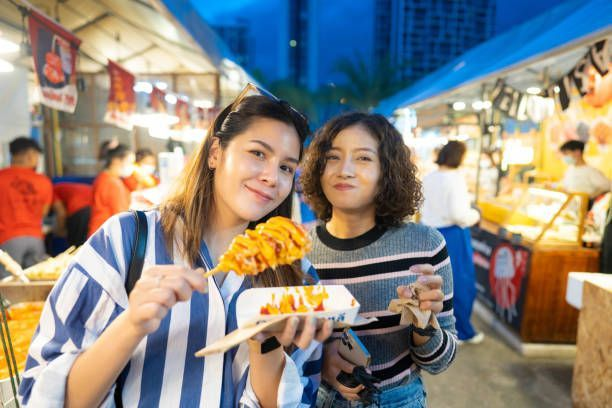

Chuseok: Korean Thanksgiving and the Foods That Bring Families Together

Chuseok, often referred to as Korean Thanksgiving, is one of Korea’s most important holidays. Celebrated on the 15th day of the 8th lunar month, it’s a time for families to gather, honor ancestors, and share traditional foods. If you're looking for supermarkets in florida that offer authentic Korean ingredients, understanding the cultural significance of Chuseok will help you prepare a meaningful and delicious celebration. This holiday blends ancient rituals with modern family traditions, creating a rich tapestry of gratitude, heritage, and culinary artistry.
What Is Chuseok?
Chuseok is a harvest festival rooted in Korea’s agrarian past. It’s a time to give thanks for the year’s bounty and pay respect to ancestors. The holiday spans three days, allowing families to travel, reunite, and participate in cultural rituals. It’s often compared to Thanksgiving in the West, but its emphasis on ancestral rites and traditional foods makes it uniquely Korean.
Historical Origins
- Dates back over 2,000 years to the Silla Dynasty
- Originally celebrated as a weaving contest and harvest ritual
- Closely tied to the lunar calendar and agricultural cycles
- Evolved into a national holiday with deep cultural significance
- Reinforces Confucian values of filial piety and family unity
Modern-Day Observance
- Recognized as a public holiday in South Korea
- Includes travel to ancestral hometowns
- Features traditional games, performances, and ceremonies
- Emphasizes family unity, gratitude, and cultural heritage
- Celebrated by Korean communities worldwide
Ancestral Rites and Family Traditions
Central to Chuseok is the practice of honoring ancestors through rituals and offerings. These customs reflect Confucian values and reinforce family bonds. The holiday is not only about food but also about spiritual connection and remembrance.
Charye Ceremony
- A formal ritual held on the morning of Chuseok
- A ceremonial table is set with symbolic foods
- Family members bow to ancestors and offer prayers
- Foods are arranged in specific order to show respect
- Includes rice, soup, meat, fish, fruit, and rice cakes
- Strengthens intergenerational ties and cultural identity
Family Activities
- Seongmyo: Visiting and cleaning ancestral graves
- Yutnori: A traditional board game played with four sticks
- Ssireum: Korean wrestling often featured in festivals
- Hanbok: Wearing traditional clothing to honor heritage
- Storytelling: Sharing family history and cultural tales
- Gift-giving: Exchanging seasonal fruits and rice cakes
Chuseok Traditional Foods
Food is at the heart of Chuseok celebrations. Each dish carries symbolic meaning and reflects Korea’s seasonal ingredients and culinary traditions. Preparing and sharing these meals is a way to express gratitude and strengthen family bonds.
Songpyeon – The Signature Dish
- Half-moon shaped rice cakes filled with sesame, chestnut, or red bean
- Steamed over pine needles for aroma and symbolism
- Made together by family members, especially children
- Represents gratitude and wishes for prosperity
- The shape and color vary by region and family tradition
- Making songpyeon is a cherished bonding activity
Other Festive Dishes
- Jeon: Pan-fried pancakes made with vegetables, seafood, or meat
- Galbijjim: Braised short ribs cooked with soy sauce, garlic, and vegetables
- Japchae: Stir-fried glass noodles with beef and vegetables
- Kimchi and banchan: Essential side dishes that balance the meal
- Fruit platters: Seasonal fruits like pears, jujubes, and persimmons
- Sikhye: Sweet rice drink served as a dessert or digestive aid
Songpyeon Recipe and Symbolism
Making songpyeon is a cherished Chuseok tradition. Families gather to shape and fill the rice cakes, often sharing stories and laughter during the process. The dish is both a culinary and cultural experience.
Ingredients and Preparation
- Rice flour: The base for the dough
- Fillings: Sesame seeds with honey, mashed chestnuts, sweetened red beans
- Pine needles: Used for steaming to infuse aroma and prevent sticking
- Water and salt: For kneading the dough
- Optional natural dyes: Mugwort, pumpkin, or beet juice for color
Step-by-Step Instructions
- Soak and grind rice to make flour
- Knead dough until smooth and elastic
- Shape into small half-moons and fill with desired ingredients
- Steam over pine needles for 20–30 minutes
- Cool and serve with fruit or tea
- Store in airtight containers to maintain freshness
Cultural Meaning
- Symbolizes gratitude for the harvest
- Making songpyeon together strengthens family bonds
- The prettier your songpyeon, the more beautiful your future children—according to tradition
- Pine needles represent longevity and purity
- The half-moon shape reflects the lunar calendar and cyclical nature of life
Regional Variations in Chuseok Cuisine
Korea’s diverse geography influences its culinary traditions. Each region adds its own flavor and ingredients to Chuseok dishes. These variations reflect local produce, climate, and cultural preferences.
Differences by Province
- Jeolla Province: Known for bold, spicy flavors and fermented seafood
- Gyeongsang Province: Prefers soy-based dishes with mild seasoning
- Gangwon Province: Uses mountain vegetables and grains like buckwheat
- Chungcheong Province: Emphasizes simplicity and seasonal vegetables
Table Comparison
| Region | Signature Dish | Flavor Profile | Unique Ingredients |
|---|---|---|---|
| Jeolla | Kimchi Jeon | Bold, spicy | Fermented seafood, chili |
| Gyeongsang | Soy-marinated Galbi | Savory, mild | Soy sauce, garlic |
| Gangwon | Buckwheat Noodles | Earthy, nutty | Wild greens, buckwheat |
| Chungcheong | Vegetable Jeon | Light, fresh | Zucchini, mung bean |
These regional differences showcase Korea’s rich culinary heritage and the adaptability of Chuseok traditions.
Preparing for Chuseok in the U.S.
Celebrating Chuseok outside Korea is a meaningful way to stay connected to heritage. With the right ingredients and preparation, families can recreate the holiday experience wherever they are. Korean-American communities often host events and share recipes to keep traditions alive.
Ingredient Sourcing
- Rice flour: Available at Korean grocery stores
- Pine needles: Can be substituted with parchment paper or banana leaves
- Fillings: Sesame seeds, chestnuts, red beans, honey
- Seasonings: Soy sauce, sesame oil, garlic, gochugaru
- Fresh produce: Napa cabbage, green onions, mushrooms
- Meats: Short ribs, beef brisket, pork belly
Miami Kimchi’s Role
- Offers authentic Korean grocery staples and ready-made banchan
- Fresh kimchi, sauces, rice cakes, and marinated meats
- Online ordering and delivery options for convenience
- Visit their grocery stores in hollywood florida page for local shopping and seasonal specials
- Staff can assist with Chuseok-specific ingredients and recipes
- Community-focused service with cultural expertise
Miami Kimchi helps Korean-American families celebrate Chuseok with authenticity and ease.
Cultural Significance and Community Impact
Chuseok is more than a holiday—it’s a celebration of identity, gratitude, and connection. In diaspora communities, it serves as a bridge between generations and cultures. It’s a time to reflect, reconnect, and rejoice.
Chuseok as a Time of Gratitude
- Reflecting on family, heritage, and blessings
- Sharing meals and stories to strengthen bonds
- Honoring ancestors and expressing appreciation for the harvest
- Practicing mindfulness and generosity
- Renewing cultural pride and community spirit
Celebrating in Diaspora Communities
- Korean-American Chuseok events hosted by cultural centers
- Food festivals featuring traditional dishes and performances
- Educational workshops on songpyeon-making and ancestral rites
- Opportunities for younger generations to learn and participate
- Community potlucks and temple ceremonies
- Media coverage and cultural outreach programs
These celebrations preserve cultural identity and foster unity among Korean communities abroad.
Conclusion
Chuseok is a beautiful blend of tradition, gratitude, and culinary artistry. Whether you're preparing songpyeon with family or honoring ancestors through charye, the holiday offers a chance to reconnect with heritage and celebrate togetherness. Miami Kimchi is proud to support these traditions by providing authentic ingredients and cultural insight. For more information or to explore their offerings, visit the Contact Us page and connect with their team.
-
What is the meaning of Chuseok in Korean culture?
Chuseok is a harvest festival that honors ancestors and celebrates family unity. It’s a time to give thanks for the year’s bounty and share traditional foods.
-
What is songpyeon and why is it important?
Songpyeon is a half-moon shaped rice cake filled with sweet ingredients and steamed over pine needles. It symbolizes gratitude and prosperity and is a key dish during Chuseok.
-
Can I celebrate Chuseok outside of Korea?
Absolutely. Many Korean-American families celebrate Chuseok by preparing traditional foods, performing ancestral rites, and participating in community events.
-
Where can I find ingredients for Chuseok in Florida?
Miami Kimchi offers authentic Korean ingredients including rice cakes, kimchi, sauces, and seasonal produce. Their Hollywood location and online store make sourcing easy.
-
What are some other traditional Chuseok dishes?
In addition to songpyeon, popular dishes include jeon (pancakes), galbijjim (braised ribs), japchae (glass noodles), and a variety of banchan (side dishes).
< Older Post
Newer Post >
Shop these ingredients at Kimchi Mart
Six stores across South Florida — or order online and pick up in an hour.